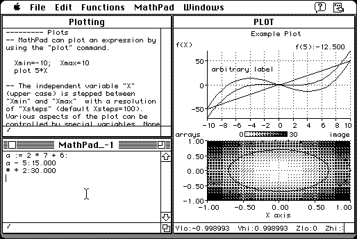

Download
MathPad-247S.zip (180K) MathPad 2.4.7s1 (full distribution for 68000) repackaged into a zipped hfs disk image and checksum file. The disk image can be mounted with Mini vMac.
MathPad-247S.bin (74K) MathPad 2.4.7s1 (application only for 68000) in the original format.
MathPad-247.bin (287K) MathPad 2.4.7 (full distribution for 68020) in the original format.
copyright: Mark Widholm
mod date: June 30, 1997
license: free for non-commercial use
official url :
MathPad
"General purpose graphing scientific calculator. It uses text input rather simulating buttons on a hand held calculator". It "requires system 7"; version 2.3.5 is available for "system 6 or system 7" (see below).

MathPad235.zip (127K) MathPad 2.3.5 repackaged into a zipped hfs disk image and checksum file. The disk image can be mounted with Mini vMac.
MathPad235.bin (135K) MathPad 2.3.5 in the original format.
If you find these downloads useful, please consider helping the Gryphel Project, which hosts them.
Here are the md5 checksums for the downloads, signed with Gryphel Key 5:
--------- GRY SIGNED TEXT --------- 61c9917a2fb88fff500a9f872033ee3e MathPad-247S.zip cc27b1caf7cd7a179926b5aede28c0ea MathPad-247S.bin d5c73f9c312e2802c43969bf22afbc6f MathPad-247.bin 8085e28ee905b6f5505cf7f3b9f0380e MathPad235.zip 04d9a15ea40321577349bec4fbadf7ca MathPad235.bin ------- BEGIN GRY SIGNATURE ------- Gry/4Xa8CFcUzxdN/FPSA7e98/p9iNMw3Poh3dHKHdHTOPAGF1cHXx2/I5MTJky/ hUx5BYtxCqRlSjbemzyUNHlt02X/Zld+2feSgnFa2MBpmMo2DHRluAeWiuKJAt7r ldrq+qI62Dt2ipHoYk9OEjvVxIPDgck2AmAaWTynSY7G1wfdmL56plxdHKRP47hy -------- END GRY SIGNATURE --------